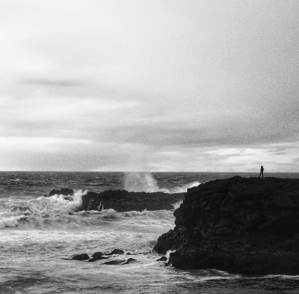

A luz é a emoção em cada fotografia.
Fernanda Luz

Fernanda Luz
Sou fotógrafa há mais de 8 anos, especializada em transformar momentos especiais em lembranças eternas.
Com um olhar sensível e atento aos detalhes, busco captar a beleza e a emoção de cada história, seja em uma paisagem, um retrato ou uma comida.
A fotografia é meu jeito de cuidar da memória — com luz, alma e verdade.